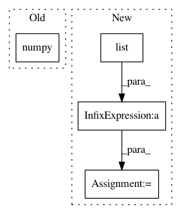

cbaa185321511d7eeb3bf3a7fe7dfd6790ebb691,geomstats/backend/tensorflow/__init__.py,,assignment_single_value,#Any#Any#Any#Any#,217
Before Change
use_vectorization = ndim(x) > 1
if use_vectorization:
n_samples = shape(x).numpy()[0]
mask = get_vectorized_mask_float(
n_samples, indices, shape(x).numpy()[1:], axis, x.dtype)
else:
After Change
if use_vectorization:
full_shape = shape(x).numpy()
n_samples = full_shape[axis]
tile_shape = list(full_shape[:axis]) + list(full_shape[axis+1:])
mask = get_vectorized_mask_float(
n_samples, indices, tile_shape, axis, x.dtype)
else:
mask = get_mask_float(indices, shape(x), x.dtype)
In pattern: SUPERPATTERN
Frequency: 3
Non-data size: 4
Instances
Project Name: geomstats/geomstats
Commit Name: cbaa185321511d7eeb3bf3a7fe7dfd6790ebb691
Time: 2020-04-04
Author: 62605255+pchauchat@users.noreply.github.com
File Name: geomstats/backend/tensorflow/__init__.py
Class Name:
Method Name: assignment_single_value
Project Name: ANTsX/ANTsPy
Commit Name: 69bee69d1767fded69ee6fc6d7b1ddc29d531987
Time: 2017-09-26
Author: ncullen.th@dartmouth.edu
File Name: ants/utils/weingarten_image_curvature.py
Class Name:
Method Name: weingarten_image_curvature
Project Name: geomstats/geomstats
Commit Name: 208439dcf621bbe1c2ba7ad67e64d645e855bba2
Time: 2020-04-23
Author: ninamio78@gmail.com
File Name: geomstats/_backend/tensorflow/__init__.py
Class Name:
Method Name: _assignment_single_value_by_sum